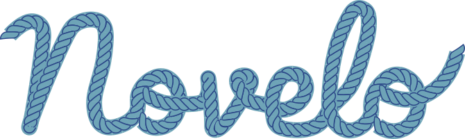
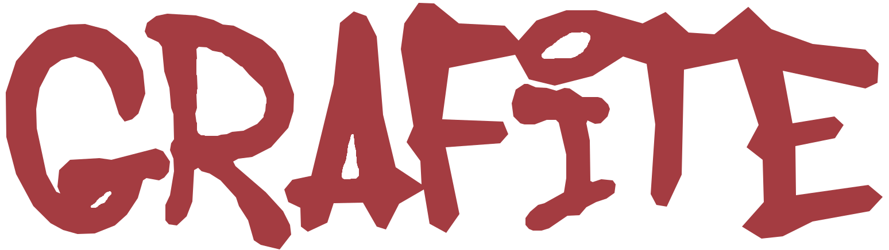

O CLIC integra a computação aos componentes curriculares já existentes, conectando conceitos e práticas computacionais às demais áreas do conhecimento.
Desenhamos sequências didáticas interdisciplinares onde a computação é utilizada para fortalecer e ampliar os objetivos de aprendizagem de áreas como Ciências Humanas e Matemática.
Criamos aplicativos educacionais pensados para a realidade e currículo das escolas brasileiras. Cada ferramenta nasce de uma necessidade pedagógica concreta, colocando a tecnologia a serviço da aprendizagem.
Os alunos controem artefatos que executam, respondem e e respondem de forma visível. Cada nova etapa da construção serve de alicerce para a evolução do projeto.
Ao longo da construção de atividades e ferramentas, nossas decisões dialogam com achados das ciências da aprendizagem.
Aplicativos educacionais feitos sob medida para a sala de aula.

Descubra como fluxos de informações e decisões podem ser transformados em chatbots interativos por meio do Novelo.
